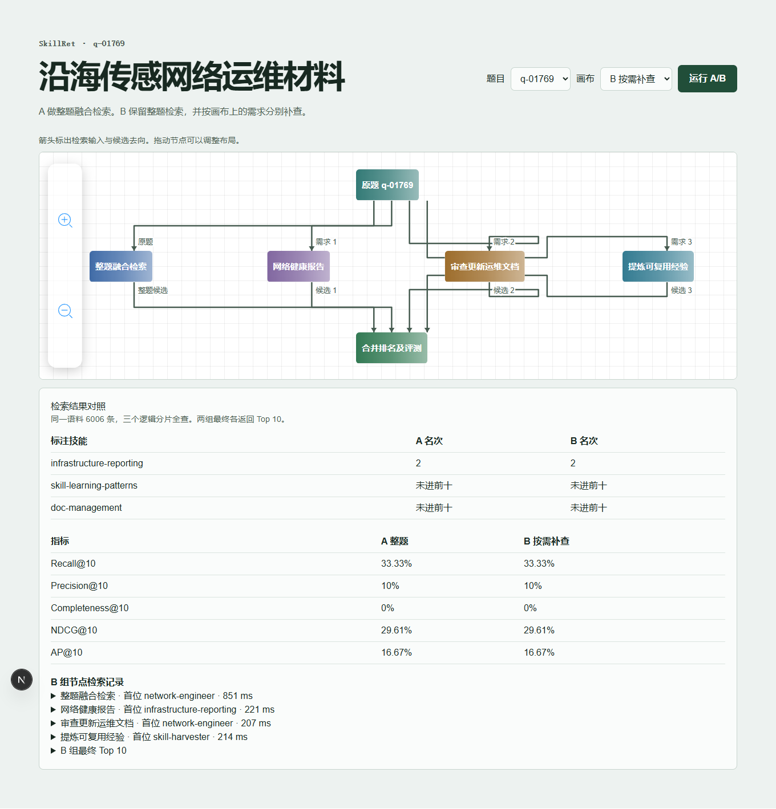

q-01769 沿海传感网络运维材料
skill-learning-patterns 在经验分支排第 5，合并时没有进入该分支前两条未选候选。doc-management 未进入任一候选前十。
A/B 指标
| 指标 | A 整题 | B 按需求补查 |
|---|
| Recall@10 | 33.33% | 33.33% |
| Precision@10 | 10.00% | 10.00% |
| Completeness@10 | 0.00% | 0.00% |
| NDCG@10 | 29.61% | 29.61% |
| AP@10 | 16.67% | 16.67% |
数据集标注技能的名次
| 标注技能 | A | B |
|---|
| infrastructure-reporting | 2 | 2 |
| skill-learning-patterns | 未进前十 | 未进前十 |
| doc-management | 未进前十 | 未进前十 |
原题与 B 组各节点
整题融合检索
Our "TidalNet" coastal research network spans 14 remote sensor stations across the Pacific Northwest, connected via a mix of LoRaWAN gateways, satellite uplinks, and two redundant fiber backhauls to our Portland data center. We need a full infrastructure health and performance report covering all segments — packet loss trends on the LoRa mesh, satellite link latency/jitter, fiber utilization rates, and capacity forecasts for next year's planned expansion to 22 stations. While pulling this together, we realized our runbooks and architecture docs are badly out of date — the last update was before we migrated three stations from cellular to LoRaWAN eight months ago, and nobody documented the new VLAN segmentation or the failover procedures we developed during the January storm outage. I need the infrastructure report generated, the existing documentation audited for gaps and accuracy against current topology, and then updated docs produced that reflect the real state of the network. Also, during the January outage we discovered that our alerting thresholds for satellite link degradation were way too conservative — we didn't get paged until 40% packet loss when we should have been alerted at 15%. Document that finding as a reusable pattern for threshold tuning so other teams in our organization running similar remote sensor networks can benefit from what we learned, and flag any other operational insights from the report that should be captured as shared best practices.
- network-engineer
- infrastructure-reporting
- Social Media Reporter
- discover-infrastructure
- Device Inspection
- network-agent
- infrastructure-cost-optimization
- dependency-tracker
- network-monitoring
- wa-reliability-review
网络健康报告
Report health and performance for a 14-station coastal sensor network. Compare LoRaWAN loss, satellite latency and jitter, fiber utilization, and capacity for expansion to 22 stations.
- infrastructure-reporting
- Device Inspection
- network-monitoring
- ghe-report
- network-engineer
- ops-monitor
- Social Media Reporter
- lunar-landers-expert
- fine-tuning-expert
- stakeholder-ops
审查更新运维文档
Audit runbooks and architecture documents against current network topology. Capture cellular-to-LoRaWAN migrations, new VLAN segmentation, and storm failover procedures in updated documentation.
- network-engineer
- network-agent
- Runbooks & Ops
- axiom-networking-diag
- Device Inspection
- axiom-ios-networking
- runbook-creation
- debugging-workflows
- workbench-docs
- architecture-docs
提炼可复用经验
Record a reusable operational learning pattern from storm alerting. Explain the actual 40% loss paging threshold, the desired 15% threshold, threshold tuning and transferable best practices.
- skill-harvester
- learned-patterns
- meta-learning
- opence-compound
- skill-learning-patterns
- episode-complete
- mem-save
- alert-optimizer
- shared-patterns
- knowledge-management
最终候选
A Top 10
- network-engineer
- infrastructure-reporting
- Social Media Reporter
- discover-infrastructure
- Device Inspection
- network-agent
- infrastructure-cost-optimization
- dependency-tracker
- network-monitoring
- wa-reliability-review
B Top 10
- network-engineer
- infrastructure-reporting
- Social Media Reporter
- Device Inspection
- network-monitoring
- network-agent
- Runbooks & Ops
- skill-harvester
- learned-patterns
- discover-infrastructure
RSI 实测截图
